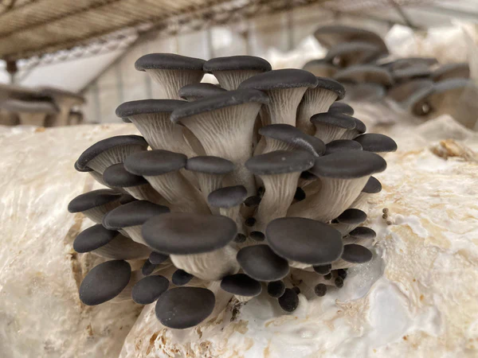

Oyster mushrooms (Pleurotus ostreatus) are among the most widely cultivated and consumed edible fungi in the world.
Known for their delicate texture and subtle flavor, they are a favorite for both beginner and expert cooks.
They grow in overlapping clusters on dead or dying trees, playing an important role in decomposing wood and recycling nutrients back into the forest ecosystem.
These mushrooms have a mild, slightly sweet flavor that pairs well with a variety of dishes.
They are often sautéed, stir-fried, grilled, or added to soups and stews.
Their quick cooking time and ability to absorb seasonings make them versatile and easy to prepare.
Beyond their culinary uses, oyster mushrooms are also valued for their potential health benefits, including immune system support and cholesterol-lowering properties.
They are a popular choice for both foragers and cultivators due to their ease of identification and growth.
Identification Guide
Oyster mushrooms (Pleurotus ostreatus and related species)
are known for their delicate, shell-like shape that resembles an oyster.
They typically grow in overlapping clusters on dead or dying hardwood trees such as beech, poplar, and willow.
The caps range from white and cream to light gray or tan, and can sometimes display subtle pastel hues.
Caps are smooth and often slightly wavy, with gills running down the short or absent stem
(a feature called decurrent gills). The gills are usually white or pale cream,
becoming slightly yellowish with age. Oyster mushrooms produce a white to lilac-gray spore print.
They are most common during cool, damp seasons, often appearing in late autumn or early winter,
though they can also fruit in spring.
For safe identification, ensure the mushroom has no ring on the stem, no volva at the base,
and that the gills run down toward the wood it’s growing from. Avoid look-alikes such as
Omphalotus species (Jack-o’-lantern mushrooms), which are poisonous and have orange coloring.
Harvest young, firm caps for the best flavor and texture, and cook thoroughly before eating.